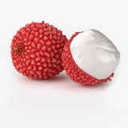

|  | It is a tropical tree native to the Guangdong and Fujian provinces of southeastern China, where cultivation is documented from the 11th century. China is the main producer of lychees, followed by India, other countries in Southeast Asia, the Indian Subcontinent and South Africa. A tall evergreen tree, the lychee bears small fleshy fruits. The outside of the fruit is pink-red, roughly textured and inedible, covering sweet flesh eaten in many different dessert dishes. Lychee seeds contain methylene cyclopropyl glycine which can cause hypoglycemia associated with outbreaks of encephalopathy in undernourished Indian and Vietnamese children who had consumed lychee fruit. Its evergreen leaves, 5 to 8 in (12.5–20 cm) long, are pinnate, having 4 to 8 alternate, elliptic-oblong to lanceolate, abruptly pointed, leaflets, The bark is grey-black, the branches a brownish-red. Its evergreen leaves are 12.5 to 20 cm (4.9 to 7.9 in) long, with leaflets in two to four pairs. Lychee are similar in foliage to the family Lauraceae, likely due to convergent evolution. They are adapted by developing leaves that repel water, and are called laurophyll or lauroid leaves. Flowers grow on a terminal inflorescence with many panicles on the current season's growth. The panicles grow in clusters of ten or more, reaching 10 to 40 cm (3.9 to 15.7 in) or longer, holding hundreds of small white, yellow, or green flowers that are distinctively fragrant |